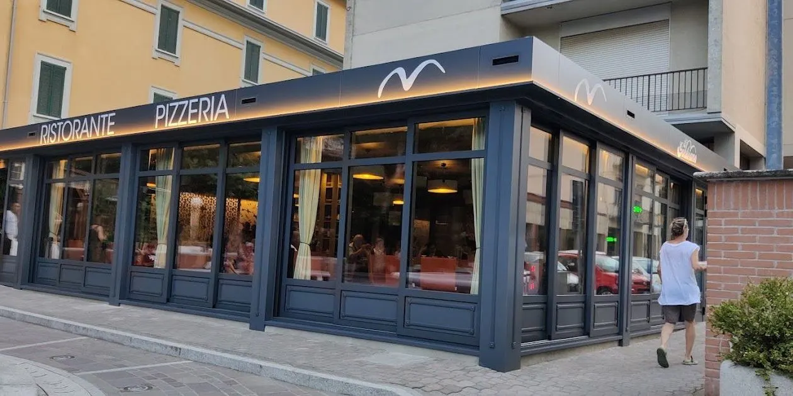
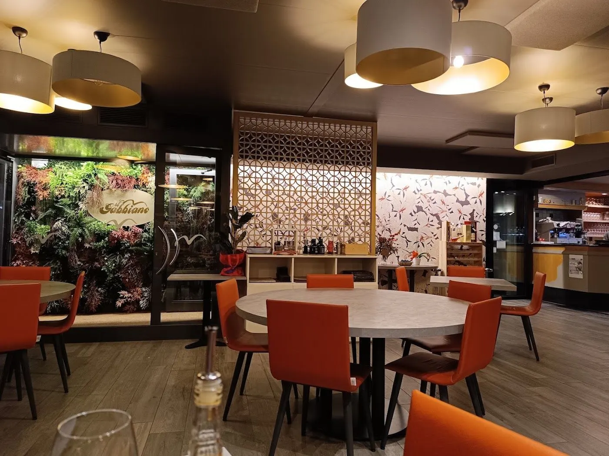

| Martedì | 19:00–23:45 |
|---|---|
| Mercoledì | 19:00–23:45 |
| Giovedì | 19:00–23:45 |
| Venerdì | 19:00–23:45 |
| Sabato | 19:00–23:45 |
| Domenica | 12:00–14:00 · 19:00–23:45 |
| Lunedì | Chiuso |


Prima di venire
Come si prenota al Gabbiano?
Con una telefonata allo 0383 93109.
Quando siete aperti?
Da martedì a domenica a cena; la domenica anche a pranzo. Il lunedì siamo chiusi.
Dove si trova il ristorante?
In Via Marconi 2 a Salice Terme.